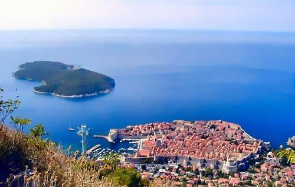
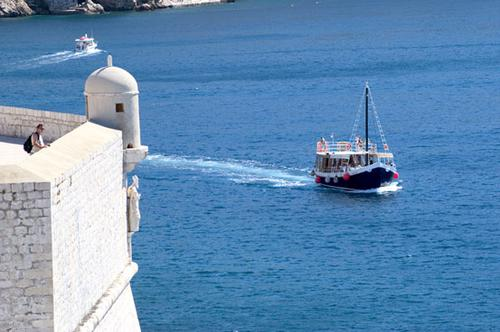
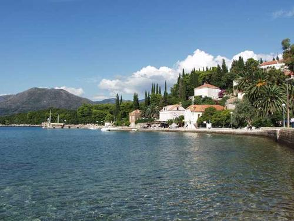
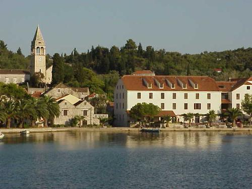
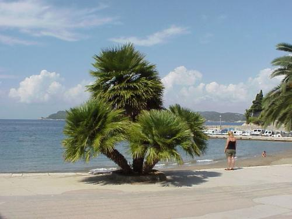

Elafiti privatno
Uz Koločep, Lopud i Šipan i otoci koji nisu dio uobičajene turističke ponude u Dubrovniku – Jakljan, Daksa ili Sv. Andrija.
- Brzi brod sa skiperom
- Moguć i poludnevni izlet (4 sata)
Izleti brodom na Elafitske otoke, Mljet i Korčulu, dnevne ture u Crnu Goru i Mostar te privatni programi složeni prema vašim željama. Svaki izlet prilagođavamo gostu – jer je svaka osoba drugačija, pa je takvo i svako putovanje.


Svaka je osoba jedinstvena – pa je takvo i svako putovanje s nama.
Dubrovnik Excursions obiteljska je putnička agencija s dugogodišnjim iskustvom. Svakom gostu pristupamo osobno i usluge prilagođavamo tako da izlet bude onakav kakav ste zamislili.
Ture su najčešće namijenjene manjim grupama, kako bismo stigli posvetiti se svakom putniku. Ako imate vlastiti itinerer na umu, s vama ćemo ga osmisliti prema vašim potrebama i budžetu.
Uživajte u putovanju koliko mi uživamo u vođenju.



Elafitski otoci smješteni su sjeverozapadno od Dubrovnika – osam otoka, većinom nenaseljenih. Na ovom cjelodnevnom izletu posjećujete tri najveća: Koločep, Šipan i Lopud. Kupanje u kristalnom moru, šetnja u hladu mediteranskog raslinja, zaseoci i domaća kuhinja – birate sami.
Polazak iz luke ispod gradskih zidina.
Slobodno vrijeme na najbližem od tri otoka.
Slobodno vrijeme i ručak.
Najduži boravak – za kupanje i šetnju otokom.
Dolazak u Staru gradsku luku.
Odaberite jedan od naših izleta ili unajmite brod sa skiperom i složite dan po svom. Na otocima birate restoran, lokalno vino i morske specijalitete.
Uz Koločep, Lopud i Šipan i otoci koji nisu dio uobičajene turističke ponude u Dubrovniku – Jakljan, Daksa ili Sv. Andrija.
Nacionalni park, vožnja brodom po Velikom jezeru i otočić Sv. Marija s benediktinskim samostanom iz 12. stoljeća. Usput uvala Saplunara i pješčana plaža Lemuni.
Brzim brodom do grada Korčule, za kojeg se kaže da je rodno mjesto Marka Pola, uz mogući usputni stanak na Elafitima i posjet otočiću Stupe.
Za ljubitelje pustolovine: divlji otoci netaknute prirode i, s druge strane, mirno mjesto duge tradicije.
Izlet brodomI s malo vremena u Dubrovniku vrijedi provesti barem nekoliko sati upoznajući grad s morske strane.
PanoramaVeslanje uz dubrovačke gradske zidine i kupanje u skrivenim špiljama.
Prizori s naših izleta – od stare gradske luke do Boke kotorske.
“The Montenegro day trip is fabulous. I absolutely loved it. Montenegro is beautiful, and the trip takes you rather far in. The scenery and entire trip is well worth the price and the time.”
Rebecca S. · izlet u Crnu Goru Prijevod: „Dnevni izlet u Crnu Goru je fantastičan. Apsolutno sam oduševljena. Zemlja je prekrasna, a izlet vas vodi duboko u nju – krajolik i cijeli dan vrijede i novca i vremena.”Brzi brod, profesionalni skiper, gorivo prema itinereru te voda, bezalkoholna pića i voće. Ručak se plaća u restoranu prema odabiru jela i pića, a ulaznice u muzeje i nacionalni park nisu uključene.
Da. Ako imate svoj itinerer na umu, s vama ćemo ga osmisliti prema vašim željama. Može se i unajmiti brod sa skiperom pa izlet organizirati po svom.
Privatni izlet brzim brodom na Elafite moguć je i kao poludnevni program u trajanju od 4 sata.
Za izlet na Mljet hidrogliserom preporučuju se sportska odjeća i kupaći kostim. Uključeni su stručni vodič, ulaznice za Nacionalni park i vožnja brodom.
Može. Predloženi program izleta brodom podložan je promjenama zbog vremenskih prilika i stanja u lukama.
Izlet Tri otoka polazi u 10:45 iz Stare gradske luke u Dubrovniku, a povratak je u 18:00.
Nazovite nas ili pošaljite upit – rado ćemo vam pomoći odabrati izlet ili složiti program po vašoj mjeri.